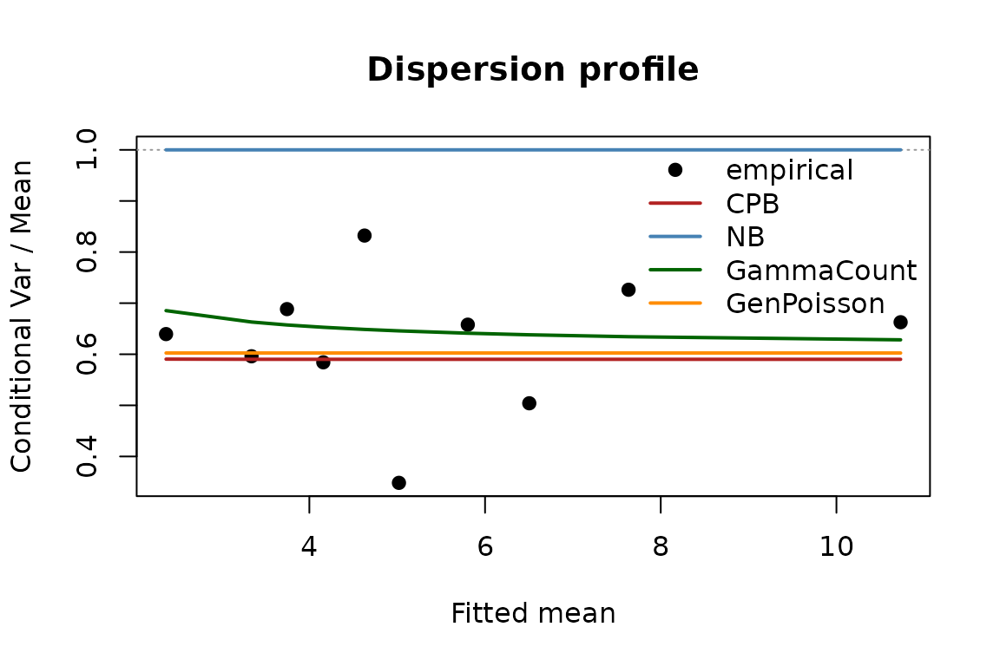
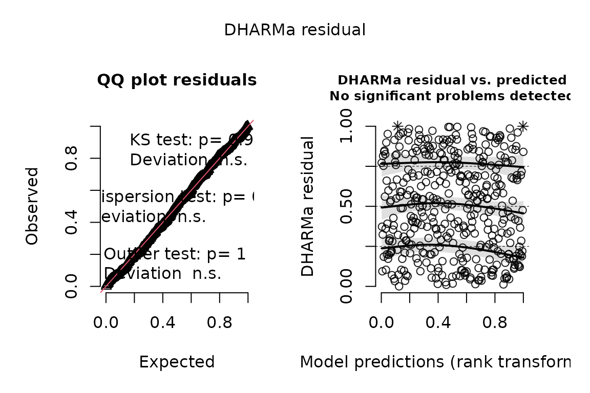

underdisp provides tools for detecting and modeling
underdispersion in count data: the case where the conditional
variance is below the conditional mean, so counts cluster more tightly
around their expectation than a Poisson allows. The Poisson and negative
binomial defaults cannot represent it; the negative binomial in
particular collapses onto the Poisson when the data are
underdispersed.
Simulating an underdispersed count
We generate a count with a conditional variance-to-mean ratio of about one half.
Screening
ud_screen() returns a marginal verdict, and, for
zero-inflated outcomes, an at-risk verdict benchmarked against a
zero-truncated Poisson (which is what separates genuine
underdispersion from the artifact of conditioning on positive
counts).
ud_screen(y ~ x, data = d, run_cpb = FALSE)
#>
#> === Underdispersion screen ===
#> Formula: y ~ x
#> N=400 mean=5.527 max=22 %zero=1.8 (unconditional var/mean=1.89)
#>
#> MARGINAL verdict: UNDERDISPERSED
#> Pearson=0.564 prop.slope=-0.391 (p=<2e-16)
#> NB vs Poisson LR = 0, at the Poisson boundary (p= 0.5 asymptotic boundary mixture )
#>
#> AT-RISK (y>0) verdict:UNDERDISPERSED [n_pos=393]
#> ZTP-Pearson = 0.569 (underdispersed if < 0.885, the calibrated 5% threshold)
#>
#> Model comparison (log-lik):
#> Poisson NB GP COMP CPB
#> -798.901 -798.904 -770.154 -772.010 NA
#> CPB not fit: run_cpb = FALSE
#>
#> COM-Poisson (full data): nu = 1.84 (> 1 = underdispersed, soft tail)Fitting the continuous parameter binomial
cpb() fits the CPB. These counts are not zero-inflated,
so the untruncated model is fit to all of them. Its default,
truncated = TRUE, is for the positive counts of a
zero-inflated outcome, the intensity of a hurdle model.
fit <- cpb(y ~ x, data = d, truncated = FALSE, se = "none")
summary(fit)
#>
#> Continuous Parameter Binomial regression (untruncated)
#> N = 400 inference: none
#>
#> Estimate Std. Error z value Pr(>|z|)
#> (Intercept) 1.57677 NA NA NA
#> x 0.49636 NA NA NA
#>
#> alpha = 0.5527 (first-order profile 95% CI: 0.488 to 0.634)
#> Implied ceiling lambda/(1-alpha): median 10.68 range 2.58 to 40.3
#> logLik = -769.78 AIC = 1545.55
#> LR vs Poisson (H0: alpha = 1): 58.25, p 1.1554e-14
#> Note: the p-value is asymptotic, which over-rejects in finite samples at this boundary; dispersion_test() gives the parametric-bootstrap p-value.The dispersion parameter alpha summarizes the
compression, and each observation carries an implied ceiling
lambda / (1 - alpha), the CPB’s continuous number of
trials; no count above its integer ceiling has positive probability.
This is King’s (1989) CPB, which is the generalized event count of
gec() at delta = alpha
(support = "floor" gives the package’s definition before
version 0.2.0). The CPB is a binomial with a non-integer number of
trials, renormalized over its finite support, so its mean is not exactly
the rate exp(x'b): fitted() and
predict(type = "response") report the exact mean of the
fitted distribution (the conditional mean given Y >= 1
for a zero-truncated fit), and predict(type = "rate") the
rate.
Quantities of interest
Predicted means, the implied ceiling, and first differences are
available for user-specified covariate profiles, and ame()
averages a marginal effect over the rows of a data set.
predict(fit, newdata = data.frame(x = c(-1, 0, 1)), type = "response")
#> [1] 2.946126 4.839306 7.949678
implied_ceiling(fit, newdata = data.frame(x = 0))
#> lambda ceiling max_count ceiling_at_alpha_lower ceiling_at_alpha_upper
#> 1 4.839299 10.81911 11 9.446006 13.22572
first_difference(fit, "x", from = -1, to = 1)
#> component from to diff
#> mean 2.946 7.95 5.004Testing equidispersion
The Poisson is the equidispersed member of every family in the
package (alpha = 1 for the CPB, delta = 1 for
the GEC, nu = 1 for the COM-Poisson, and so on), so
dispersion_test() tests a fitted model’s dispersion
parameter against its Poisson value by a likelihood-ratio test on the
fitted design, with fixed effects carried into the null. Where the
Poisson value sits on the boundary of the parameter space (the CPB, the
negative binomial) the test is one-sided, and its p-value comes by
default from a parametric bootstrap under the fitted Poisson, because
the asymptotic Self–Liang mixture over-rejects in finite samples;
B = 0 gives the quick asymptotic value shown here.
Elsewhere the alternative can be two-sided or directional. For a plain
Poisson fit the Cameron–Trivedi auxiliary regression is available as
method = "auxiliary".
dispersion_test(fit, B = 0) # asymptotic value; the default is the bootstrap p-value
#>
#> Likelihood-ratio test of equidispersion (CPB vs Poisson; boundary null; asymptotic 1/2 chi2_0 + 1/2 chi2_1 mixture)
#>
#> data: y ~ x
#> LR = 58.2479 (logLik: fitted family = -769.78, Poisson = -798.90), p-value = 1.155e-14
#> alternative hypothesis: underdispersion
#> note: the p-value is asymptotic; at a boundary null the statistic is skewed toward rejection in finite samples, and the default (B = NULL) calibrates it by parametric bootstrap
#> estimate: alpha = 0.5527 (Poisson value 1)
dispersion_test(count_reg(y ~ x, data = d, family = "poisson"),
method = "auxiliary", alternative = "under")
#>
#> Cameron-Trivedi auxiliary regression test of equidispersion (Var = mu + a mu^2)
#>
#> data: y ~ x
#> t = -9.3813, p-value = < 2.2e-16
#> alternative hypothesis: underdispersion
#> estimate: a = -0.0619 (Poisson value 0)Bootstrap inference
Hessian-based standard errors are unreliable for the CPB: an
observation whose ceiling lies just above an integer carries information
about its rate that grows without bound as the ceiling approaches the
integer (see ?cpb). Coefficient inference uses a
cold-multistart pairs bootstrap. In simulations from King’s CPB at n =
300, its 95% interval for a slope covers 0.91 at alpha =
0.3, 0.95 at 0.5 and 0.94 at 0.7 (0.95 on the floor support). At
alpha = 0.3, neither a parametric bootstrap (0.918) nor 999
replicates (0.924) brings it to the nominal level. The dispersion
parameter carries a profile-likelihood interval. That interval is
first-order by default. On King’s support it covers close to its level
in simulations (0.940 to 0.956). On the floor support it does not: the
estimate of alpha is biased toward zero there (the
log-ceiling coefficients behave like endpoint parameters), so it covers
about 0.90 to 0.94, with most misses on the upper side.
calibrate_alpha() is the opt-in remedy for floor-support
fits and an optional refinement on King’s. It stores the
parametric-bootstrap distribution of the signed root of the profile
likelihood ratio in the fit
(fit <- calibrate_alpha(fit, B = 199, cores = 4, seed = 1),
about a third of a fit per replicate), after which
alpha_confint(), confint(),
implied_ceiling() and summary() report the
calibrated interval. Both intervals are model-based and assume
independent observations. cores = runs the replicates on a
socket cluster seeded from the session.
The bootstrap draws also carry the quantities of interest.
first_difference(),
predict(interval = "confidence") and ame()
compute the quantity at every draw, the dispersion parameter included,
and report its percentile interval; a fit without draws uses the delta
method where its family has a covariance.
fit_b <- cpb(y ~ x, data = d, truncated = FALSE, se = "bootstrap", B = 200)
summary(fit_b)
#>
#> Continuous Parameter Binomial regression (untruncated)
#> N = 400 inference: bootstrap
#>
#> Estimate Std. Error z value Pr(>|z|)
#> (Intercept) 1.576770 0.017862 88.274 < 2.2e-16 ***
#> x 0.496362 0.018418 26.950 < 2.2e-16 ***
#> ---
#> Signif. codes: 0 '***' 0.001 '**' 0.01 '*' 0.05 '.' 0.1 ' ' 1
#>
#> alpha = 0.5527 (first-order profile 95% CI: 0.488 to 0.634)
#> Implied ceiling lambda/(1-alpha): median 10.68 range 2.58 to 40.3
#> logLik = -769.78 AIC = 1545.55
#> LR vs Poisson (H0: alpha = 1): 58.25, p 1.1554e-14
#> Note: the p-value is asymptotic, which over-rejects in finite samples at this boundary; dispersion_test() gives the parametric-bootstrap p-value.
#> (200 bootstrap resamples converged)
irr(fit_b) # rate ratios with percentile intervals
#> term equation ratio estimate lower upper method
#> (Intercept) count IRR 4.839 4.679 5.009 bootstrap (stored)
#> x count IRR 1.643 1.580 1.694 bootstrap (stored)
confint(fit_b) # coefficients (percentile) and alpha (first-order profile likelihood)
#> 2.5 % 97.5 %
#> (Intercept) 1.5431636 1.6111519
#> x 0.4572332 0.5273667
#> alpha 0.4876884 0.6340994
first_difference(fit_b, "x", from = -1, to = 1)
#> component from to diff lower upper method
#> mean 2.946 7.95 5.004 4.619 5.335 bootstrap (stored)
predict(fit_b, newdata = data.frame(x = c(-1, 1)), interval = "confidence")
#> fit lwr upr
#> [1,] 2.946126 2.789861 3.132517
#> [2,] 7.949678 7.618562 8.258089
#> attr(,"method")
#> [1] "bootstrap (stored)" "bootstrap (stored)"
ame(fit_b, "x", newdata = d) # the average marginal effect over the sample
#> term contrast type estimate lower upper method n
#> x dY/dx response 2.743 2.504 2.949 bootstrap (stored) 400Mean effects and the robust Poisson
For the conditional mean alone, the Poisson with robust standard
errors is the benchmark: its coefficients are consistent whenever the
mean is exp(x'b), whatever the distribution (Gourieroux,
Monfort and Trognon 1984; Wooldridge 1999), and its robust intervals
hold under underdispersion as under overdispersion. The CPB’s mean
effects are consistent only when the CPB is the data’s process. On
underdispersed counts from another process (binomial counts with varying
trials, a COM-Poisson) its average marginal effects can be off by
several percent at any sample size, while the robust Poisson’s stay on
target; when the CPB is the process, its effects are consistent, and the
Poisson’s are a little off, since the CPB’s mean is not exactly
log-linear. What the CPB adds is the distribution: predicted
probabilities, the ceiling, the share of zeros, intervals for a count.
The two average marginal effects side by side are a check worth
reporting.
pml <- count_reg(y ~ x, data = d, family = "poisson", se = "robust")
ame(pml, "x", newdata = d) # robust Poisson
#> term contrast type estimate lower upper method n
#> x dY/dx response 2.739 2.516 2.962 delta 400
ame(fit_b, "x", newdata = d) # CPB
#> term contrast type estimate lower upper method n
#> x dY/dx response 2.743 2.504 2.949 bootstrap (stored) 400The free-dispersion GEC
gec() fits King’s generalized event count (Katz) model,
whose dispersion delta is estimated freely, so the data
choose the direction of dispersion rather than the analyst presuming it.
On the underdispersed count above it recovers delta well
below one; on a Poisson outcome it sits at one.
gec(y ~ x, data = d, se = "none") # delta ~ 0.5
#> Generalized event count (Katz family) regression
#> Call: gec(formula = y ~ x, data = d, se = "none")
#> (Intercept) x
#> 1.5768 0.4964
#>
#> dispersion delta (Katz; Var/Mean on an unbounded support) = 0.553 [underdispersed (LR p = 2.3e-14)]
#> logLik = -769.78, n = 400
gec(y ~ x, data = data.frame(y = rpois(n, exp(1 + 0.4 * x)), x = x),
se = "none") # delta ~ 1
#> Generalized event count (Katz family) regression
#> Call: gec(formula = y ~ x, data = data.frame(y = rpois(n, exp(1 + 0.4 * x)), x = x), se = "none")
#> (Intercept) x
#> 1.0510 0.3873
#>
#> dispersion delta (Katz; Var/Mean on an unbounded support) = 0.879 [equidispersion not rejected (LR p = 0.08)]
#> logLik = -746.22, n = 400The GEC carries the same zero-truncated, hurdle
(hurdle_gec()), zero-inflated (zi_gec()), and
fixed-effects (gec_fe()) variants as the CPB.
High-dimensional fixed effects
Underdispersion is typically a within-unit phenomenon that
pooled analyses hide. cpb_fe() absorbs a full set of unit
fixed effects by concentrating them out of the likelihood, so it scales
to thousands of units.
panel <- do.call(rbind, lapply(1:30, function(i) {
xx <- rnorm(12); NN <- pmax(round(exp(rnorm(1, 0, 0.4) + 0.4 * xx) / 0.5), 1)
data.frame(unit = i, x = xx, y = rbinom(12, NN, 0.5))
}))
fe_fit <- cpb_fe(y ~ x, data = panel, fe = "unit")
fe_fit
#> CPB regression with 30 unit fixed effects (concentrated likelihood)
#> Coefficients:
#> x
#> 0.4002
#>
#> alpha (shape parameter): 0.3746 median largest feasible count: 2
#> Note: alpha is subject to incidental-parameters bias for short panels; see ?cpb_fe.
dispersion_test(fe_fit, B = 0) # the statistic against a Poisson with the same unit effects
#>
#> Likelihood-ratio test of equidispersion (CPB vs Poisson; boundary null; asymptotic 1/2 chi2_0 + 1/2 chi2_1 mixture)
#>
#> data: y ~ x
#> LR = 114.8203 (logLik: fitted family = -364.90, Poisson = -422.31), p-value = NA
#> alternative hypothesis: underdispersion
#> note: unit fixed effects bias the dispersion estimate toward underdispersion, so the asymptotic distribution does not apply; B > 0 gives the parametric-bootstrap p-value
#> estimate: alpha = 0.3746 (Poisson value 1)With unit fixed effects the asymptotic distribution of that statistic does not apply, so its p-value comes from a parametric bootstrap under the fitted Poisson. Every replicate refits the model, which makes the bootstrap about 199 times as slow as the fit; it is not run here:
dispersion_test(fe_fit, cores = 2) # parametric-bootstrap p-value, 199 replicatesComparing the family
compare_dispersion() fits the Poisson, negative
binomial, the native soft-tail COM-Poisson, the free-dispersion GEC, and
the hard-ceiling CPB, and reports a fit comparison. The CPB’s bound
itself is tested on held-out counts: in sample every feasible fit
respects it, since its likelihood forbids exceedance.
ceiling_exceedance() counts the held-out observations above
it.
compare_dispersion(y ~ x, data = d)$table
#> df logLik AIC BIC logscore rps zero_fit
#> Poisson 2 -798.9009 1601.802 1609.785 1.997252 0.9855061 0.024243957
#> NegBinomial 3 -798.9042 1603.808 1615.783 1.997261 0.9855095 0.024244780
#> COM-Poisson 3 -772.0096 1550.019 1561.994 1.930024 0.9631112 0.009312565
#> CPB 3 -769.7769 1545.554 1557.528 1.924442 0.9644026 0.010538425
#> GEC 3 -769.7769 1545.554 1557.528 1.924442 0.9644021 0.010539387
#> converged
#> Poisson TRUE
#> NegBinomial TRUE
#> COM-Poisson TRUE
#> CPB TRUE
#> GEC TRUE
ceiling_exceedance(cpb(y ~ x, data = d[1:300, ], truncated = FALSE, se = "none"), d[301:400, ])
#> n exceed share
#> 1 100 0 0The wider underdispersed family
Underdispersion has more than one mechanism, and
count_reg() fits the distributions that express them
through one interface: the classical COM-Poisson
("compois", rate-parameterized) and Huang’s
mean-parameterized COM-Poisson ("mpcmp", a soft tail), the
Consul–Jain generalized Poisson ("genpois", constant
variance-to-mean ratio, finite support when underdispersed),
Winkelmann’s gamma-count ("gammacount", events with more
regular timing than a Poisson process), Efron’s double Poisson
("doublepois"), the hyper-Poisson of Bardwell and Crow in
the mean parameterization of Sáez-Castillo and Conde-Sánchez
("hyperpois", with constant dispersion), and Ridout and
Besbeas’s exponentially weighted Poisson ("ewp3", one
weight per tail, and its one-weight form "ewp2"). Each
inherits fixed effects, zero-truncation, hurdle and zero-inflated forms,
offsets, frequency weights, robust and cluster-robust standard errors,
and every method in the package, so compare_models() places
them next to the CPB on one footing.
dw <- d[1:150, ] # part of the sample keeps the seven fits quick
fits <- list(
CPB = cpb(y ~ x, data = dw, truncated = FALSE, se = "none"),
Poisson = count_reg(y ~ x, data = dw, family = "poisson"),
NB = count_reg(y ~ x, data = dw, family = "negbin"),
`COM-Poisson`= count_reg(y ~ x, data = dw, family = "mpcmp"),
GenPoisson = count_reg(y ~ x, data = dw, family = "genpois"),
GammaCount = count_reg(y ~ x, data = dw, family = "gammacount"),
DoublePois = count_reg(y ~ x, data = dw, family = "doublepois")
)
do.call(compare_models, fits)
#> df logLik AIC BIC logscore rps truncated
#> CPB 3 -297.1659 600.3318 609.3637 1.981106 1.018841 FALSE
#> GenPoisson 3 -297.4525 600.9050 609.9369 1.983017 1.018599 FALSE
#> GammaCount 3 -299.0185 604.0369 613.0688 1.993456 1.018395 FALSE
#> COM-Poisson 3 -299.2068 604.4135 613.4454 1.994712 1.019137 FALSE
#> DoublePois 3 -299.9026 605.8053 614.8372 1.999351 1.019015 FALSE
#> Poisson 2 -305.3268 614.6535 620.6748 2.035512 1.029690 FALSE
#> NB 3 -305.3268 616.6535 625.6854 2.035512 1.029691 FALSE
#> separated
#> CPB FALSE
#> GenPoisson FALSE
#> GammaCount FALSE
#> COM-Poisson FALSE
#> DoublePois FALSE
#> Poisson FALSE
#> NB FALSEOn underdispersed data the negative binomial collapses onto the
Poisson, while the underdispersed families capture the compression and
win on AIC and the proper scores. The families differ in how their
dispersion moves with the mean, and dispersion_profile()
sets the empirical conditional variance-to-mean ratio, by bins of the
fitted mean, against the curve each family implies:
dispersion_profile(CPB = fits$CPB, NB = fits$NB, GammaCount = fits$GammaCount,
GenPoisson = fits$GenPoisson)
The correlated-random-effects device (mundlak()) and
matching d/p/q/r
functions (dcpb(), dgec(),
dcompois(), dgammacount(),
dgenpois(), ddoublepois(),
dhyperpois(), dewp()) round out the
family.
Excess zeros: hurdle and zero-inflated models
Many count outcomes mix a participation process (most units at zero) with a tight positive count. The bundled peacekeeping panel – the number of UN operations each state contributes troops to per year – shows the package’s central move: marginally the count looks overdispersed, but conditioning on country fixed effects and benchmarking the positive counts against a zero-truncated Poisson, the at-risk process is underdispersed.
data(peacekeeping)
ud_screen(contributions ~ democracy + lgdppc + lpop + milper + factor(iso3),
data = peacekeeping, run_cpb = FALSE, run_gp = FALSE)
#>
#> === Underdispersion screen ===
#> Formula: contributions ~ democracy + lgdppc + lpop + milper + factor(iso3)
#> N=4448 mean=3.191 max=18 %zero=41.5 (unconditional var/mean=4.56)
#>
#> MARGINAL verdict: OVERDISPERSED
#> Pearson=1.086 prop.slope=0.191 (p=<2e-16)
#> NB vs Poisson LR = 18.11 (p= 1e-05 asymptotic boundary mixture ; sig => overdispersion)
#>
#> AT-RISK (y>0) verdict:UNDERDISPERSED [n_pos=2602]
#> ZTP-Pearson = 0.841 (underdispersed if < 0.955, the calibrated 5% threshold)
#>
#> Model comparison (log-lik):
#> Poisson NB GP COMP CPB
#> -6645.816 -6636.761 NA NA NA
#> CPB not fit: run_cpb = FALSE
#> GP not fit: run_gp = FALSE
#> COMP not fit: more than comp_max_par = 30 parametersThat is the case for a two-part model with an underdispersed
intensity. hurdle_cpb() joins a participation logit to a
zero-truncated CPB, and zi_cpb() fits the structural-zero
mixture. The two are not nested, so compare_models()
adjudicates between them, on information criteria and proper scores
(cv_score() holds them out); zi_test() tests a
mixture with intercept-only inflation against its non-inflated nest.
z <- rnorm(n)
yh <- rhurdle_cpb(n, lambda = exp(1.2 + 0.3 * x), alpha = 0.5,
p = plogis(0.3 + 0.8 * z))
dh <- data.frame(y = yh, x = x, z = z)
h <- hurdle_cpb(y ~ x, data = dh, participation = ~ z)
zi <- zi_cpb(y ~ x, data = dh, zero = ~ z)
compare_models(hurdle = h, mixture = zi)
#> df logLik AIC BIC logscore rps truncated separated
#> hurdle 5 -626.8919 1263.784 1283.741 1.567230 1.044975 FALSE FALSE
#> mixture 5 -627.5024 1265.005 1284.962 1.568756 1.046229 FALSE FALSEThe hurdle’s first_difference() reports the change on
each margin, the participation probability and the conditional mean,
beside the marginal mean – which channel a covariate moves, not just the
blended marginal effect. One practical note: because the hurdle
factorizes, its participation stage is an ordinary logistic regression;
the hurdles check it for separation and warn, and if a dummy-heavy
participation equation separates, fit that stage with a dedicated
bias-reduction package (logistf, brglm2)
alongside this package’s zero-truncated intensity. The mixture’s zero
equation can separate even where the hurdle’s logit does not, since the
count component’s probability of a zero covers the zeros on the wrong
side. zi_cpb(), zi_gec() and
zi_count() check for this after the fit and warn (see the
Separation section of ?zi_cpb).
Weights
Every estimator takes frequency weights (a weight of
w is equivalent to w copies of the row, in the
likelihood, the information, and the bootstrap), so tabulated data fit
exactly as the expanded data would:
Short panels: bias-corrected fixed effects
The concentrated fixed-effects dispersion estimate carries the
incidental- parameters bias of order 1/T: with few observations per
unit, alpha is biased downward (the panel looks
more underdispersed than it is). bias_correct = "jackknife"
removes the leading bias term by the split-panel jackknife of Dhaene and
Jochmans (2015), refitting on each unit’s temporal halves;
time names the column that orders each unit’s rows.
short <- do.call(rbind, lapply(1:16, function(i) {
xx <- rnorm(8); NN <- pmax(round(exp(1.0 + rnorm(1, 0, 0.4) + 0.3 * xx) / 0.5), 1)
data.frame(unit = i, t = 1:8, x = xx, y = rbinom(8, NN, 0.5))
}))
ml <- cpb_fe(y ~ x, data = short, fe = "unit")
jk <- cpb_fe(y ~ x, data = short, fe = "unit", bias_correct = "jackknife", time = "t")
c(ml = ml$alpha, jackknife = jk$alpha) # truth is 0.5; ML is biased downward
#> ml jackknife
#> 0.3336481 0.3719612The correction is only valid when the two half-panels estimate the same parameter (the method’s time-homogeneity requirement), so it carries a validity gate: the panel is also split cross-sectionally by units – a placebo that is exchangeable under any time pattern – and if the temporal halves disagree beyond that placebo noise, the correction is refused with a warning naming the failed assumption and the maximum-likelihood fit is returned. On a trending or regime-changing panel, the refusal is the correct answer. The gate is deliberately powered over sized: in calibration it refuses 9% to 13% of genuinely homogeneous panels (you keep the ordinary ML fit) while catching 98.5% of dispersion regime changes and all smooth unmodeled trends.
Simulated-residual diagnostics with DHARMa
Every fitted model in the package has a simulate()
method, so the whole family plugs into DHARMa’s
simulated-residual diagnostics.
sims <- simulate(h, nsim = 100, seed = 1)
res <- DHARMa::createDHARMa(simulatedResponse = as.matrix(sims),
observedResponse = dh$y,
fittedPredictedResponse = fitted(h),
integerResponse = TRUE)
plot(res)
#> Warning in newton(lsp = lsp, X = G$X, y = G$y, Eb = G$Eb, UrS = G$UrS, L = G$L,
#> : Fitting terminated with step failure - check results carefully